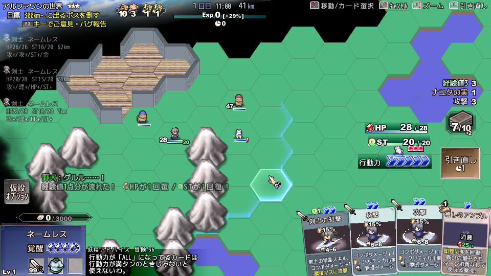
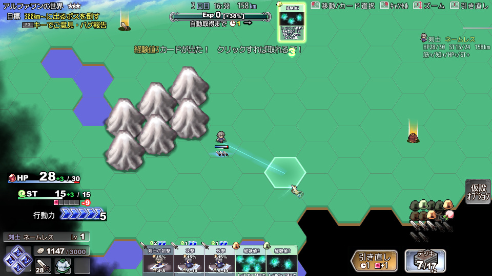
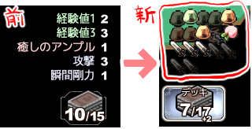
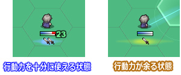

■2019-02-23 (土) 片道勇者2【32】 インターフェース調整▼
今週はお仕事の合間にちょっとだけ『片道勇者2』の開発を進められました。
今回はこれまでの『片道勇者2』開発でやったことの中で
アルファ1からインターフェースをいじった点について一部ご紹介します！
- マップインターフェースをなおも調整中
α1時点

↓
現在

前にもマップのインターフェースいじったよーとご報告した気がしますが
今のバージョンはこんな感じになっています。
多少なりとも圧迫感みたいなのは減ったと思います。
・「手札」は右下から中央下に移動。
・「ゲージ類」は右側から左側に移動。
・「システムメッセージ」は中央下寄りから中央上寄りに移動。
という感じにしました。スマホ対応を考えていた時期もありましたが
どうやらそもそも処理の重さ的に無理くさいことが判明しつつあるので、
横着せずに完全にPC用チューンで行くことになりました。
そのほか、細かな修正部分を以下にご紹介していきます。
- α1と違い、「デッキ内容表示」をアイコンにしてみた
「デッキの残りカード一覧」、これまでは文字で表示されていたのですが
デッキの中身が直感的に分からなかったので、
ここも色々と悩んで試行錯誤していた部分でした。
今はデッキ内容一覧を「アイコン」で表示してみているのですが、
デッキの「カード総量やカード種の配分」が一目で分かりやすくなりました。
下の画像の、右側の表示です。
↓

これまでは左側のように「まだ山札に残ってるもの」だけを文字で表示していましたが、
今は右側のようなアイコン表記にして、「山札も捨て札も一緒にまとめて表示」しています。
このうち、明るいカードが「山札に残っている」カードです。
このアイコン表示、私がプレイしてみたところ、いま何を何割くらい持っているのか、
何がどのくらい残っているかが直感的に分かりやすくなり、
「あーデッキの半分くらいが経験値になってるわー早く女神像を見つけないとなー」
みたいな判断が一瞬でできるようになったので、結構いい感じでした。
これまであんまり意識できてませんでしたが、
「アイコンってザツに使っても便利だな！」
ということに今さら気付いて感動しています。
『片道勇者1』の画面右に出る状態異常一覧なども、
アイコンにすればもっとスッキリしてたでしょうね。
- 主人公の下のミニゲージ周辺を修正

これはアルファ1を遊んだことがある人にしか意図が分からない話ですが、
主人公のゲージの下に「手札の攻撃スキルカードの枚数」を
常時表示するようにしました。
これは「自動攻撃したときに何回攻撃できそうか」を把握するためのものです。
自動攻撃したときに「行動力」をおおよそ使い切れる場合は青く光り、
行動力が余る状態、つまり
「まだ行動できるのに手札にスキルカードが足りない」状態ならば
黄色やオレンジに光って分かりやすく知らせるようにしました。
あとアルファ1ではゲージ横に常に出ていた「HPやSTの数字」も、
ゲージの％そのものに注目してもらうにあたって邪魔になっていたので、
変化があったときだけ表示されるようにしました。
- アクション一連の総ダメージを表示するように。

攻撃で「4」と「7」ダメージを与えたので、
総ダメージ「11」と大きく表示されています。
総ダメージ表示は、入れてみたら
「なんで最初にこれがなかったんだ！」と思ってしまったものです。
α1では与えたダメージが「単発分ずつ」しか出なかったのですが、
これからは「総ダメージ」のほうが目立って表示されるようになっています。
今作は「手札のコンボで1ターンの総ダメージ効率をどれだけ上げられるか」が
主軸の一つとなるゲームなので、この総ダメージ表示メインの方が
手札のパワーやデッキ構築のうまさを評価しやすい感じがありました。
「覚醒」込み込みで6回攻撃して総ダメージ200とか出ると気持ちがいい！
何より、推定総ダメージ（上の画像の「(剣) 9～17」 と出てる部分）と
実際の総ダメージを比較しやすいので、そういう意味でも合理的になりました。
これは（計算が苦手な私には）よそのデッキ構築RPGでも欲しいかもですね。
といった感じで、地味ながらプレイしやすさに影響する部分も
試行錯誤しながらいじっています。
普段はよそのゲームの基本系をまねて作ってなんとかなってただけなので、
今回はまだまだインターフェースについてたくさん学ぶことがありそうです。
「ああではないこうではないと色々いじった結果、今のところこうなっている」
というだけなのでこれからも変わる可能性はありますが、
自分がテストプレイするときに
「グアアアなんだこれは！ パーン！（ゲームを投げ捨てる）」
とならない程度には、いくらか快適かつ
分かりやすいようにしておきたいと考えています。
2019-02-23 (土)  カテゴリ: 片道勇者2
カテゴリ: 片道勇者2
 カテゴリ: 片道勇者2
カテゴリ: 片道勇者2